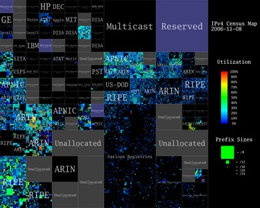
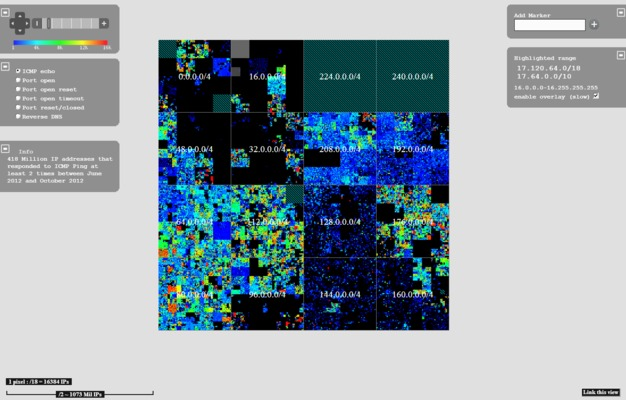
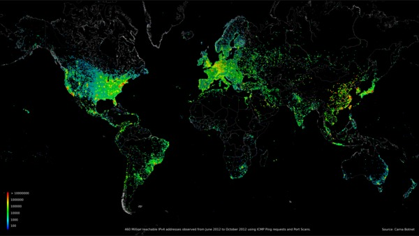
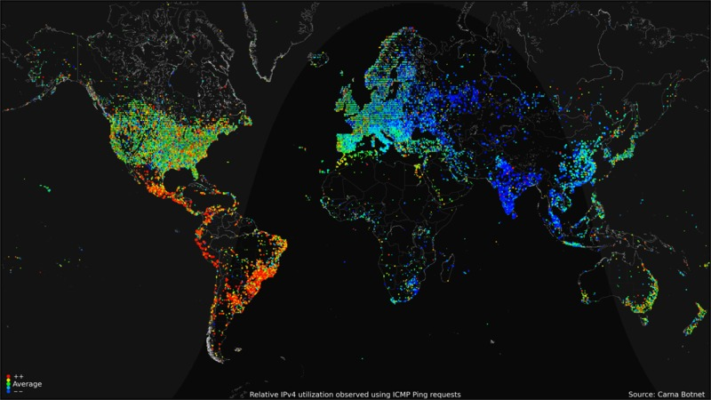
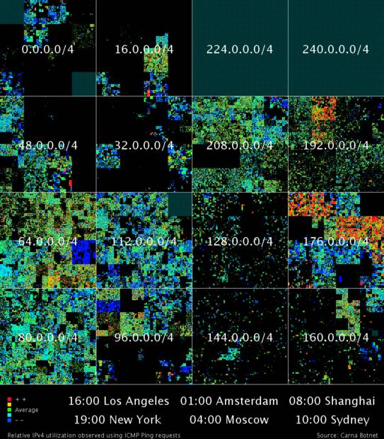

Internet Census 2012
Port scanning /0 using insecure embedded devices
Carna Botnet
Abstract While playing around with the Nmap Scripting Engine (NSE) we discovered an amazing number of open embedded devices on the Internet. Many of them are based on Linux and allow login to standard BusyBox with empty or default credentials. We used these devices to build a distributed port scanner to scan all IPv4 addresses. These scans include service probes for the most common ports, ICMP ping, reverse DNS and SYN scans. We analyzed some of the data to get an estimation of the IP address usage.
All data gathered during our research is released into the public domain for further study.
1 Introduction
Two years ago while spending some time with the Nmap Scripting Engine (NSE) someone mentioned that we should try the classic telnet login root:root on random IP addresses. This was meant as a joke, but was given a try. We started scanning and quickly realized that there should be several thousand unprotected devices on the Internet.
After completing the scan of roughly one hundred thousand IP addresses, we realized the number of insecure devices must be at least one hundred thousand. Starting with one device and assuming a scan speed of ten IP addresses per second, it should find the next open device within one hour. The scan rate would be doubled if we deployed a scanner to the newly found device. After doubling the scan rate in this way about 16.5 times, all unprotected devices would be found; this would take only 16.5 hours. Additionally, with one hundred thousand devices scanning at ten probes per second we would have a distributed port scanner to port scan the entire IPv4 Internet within one hour.
2 Proof of Concept
To further verify our sample data, we developed a small binary that could be uploaded to insecure devices.
To minimize interference with normal system operation, our binary was set to run with a watchdog and on the lowest possible system priority. Furthermore, it was not permanently installed and stopped itself after a few days. We also deployed a readme file containing a description of the project as well as a contact email address.
The binary consists of two parts. The first one is a telnet scanner which tries a few different login combinations, e.g. root:root, admin:admin and both without passwords. The second part manages the scanner, gives it IP ranges to scan and uploads scan results to a specified IP address. We deployed our binary on IP addresses we had gathered from our sample data and started scanning on port 23 (Telnet) on every IPv4 address. Our telnet scanner was also started on every newly found device, so the complete scan took only roughly one night. We stopped the automatic deployment after our binary was started on approximately thirty thousand devices.
The completed scan proved our assumption was true. There were in fact several hundred thousand unprotected devices on the Internet making it possible to build a super fast distributed port scanner.
3 Design and Implementation
3.1 Be Nice
We had no interest to interfere with default device operation so we did not change passwords and did not make any permanent changes. After a reboot the device was back in its original state including weak or no password with none of our binaries or data stored on the device anymore. Our binaries were running with the lowest possible priority and included a watchdog that would stop the executable in case anything went wrong. Our scanner was limited to 128 simultaneous connections and had a connection timeout of 12 seconds. This limits the effective scanning speed to ~10 IPs per second per client. We also uploaded a readme file containing a short explanation of the project as well as a contact email address to provide feedback for security researchers, ISPs and law enforcement who may notice the project.
The vast majority of all unprotected devices are consumer routers or set-top boxes which can be found in groups of thousands of devices. A group consists of machines that have the same CPU and the same amount of RAM. However, there are many small groups of machines that are only available a few to a few hundred times. We took a closer look at some of those devices to see what their purpose might be and quickly found IPSec routers, BGP routers, x86 equipment with crypto accelerator cards, industrial control systems, physical door security systems, big Cisco/Juniper equipment and so on. We decided to completely ignore all traffic going through the devices and everything behind the routers. This implies no arp, dhcp statistics, no monitoring or counting of traffic, no port scanning of LAN devices and no playing around with all the fun things that might be waiting in the local networks.
We used the devices as a tool to work at the Internet scale. We did this in the least invasive way possible and with the maximum respect to the privacy of the regular device users.
3.2 Target Platforms
As could be seen from the sample data, insecure devices are located basically everywhere on the Internet. They are not specific to one ISP or country. So the problem of default or empty passwords is an Internet and industry wide phenomenon.
We used a strict set of rules to identify the target devices' CPU and RAM to ensure our binary was only deployed to systems where it was known to work. We also excluded all smaller groups of devices since we did not want to interfere with industrial controls or mission critical hardware in any way. Our binary ran on approximately 420 thousand devices. These are only about 25 percent of all unprotected devices found. There are hundreds of thousands of devices that do not have a real shell so we could not upload or run a binary, a hundred thousand mips4kce machines that are mostly too small and not capable enough for our purposes as well as many unidentifiable configuration interfaces for random hardware. We were able to use ifconfig to get the MAC address on most devices. We collected these MAC addresses for some time and identified about 1.2 million unique unprotected devices. This number does not include devices that do not have ifconfig.
3.3 C&C less Infrastructure
A classic botnet usually requires one or more command and control (C&C) servers the clients can connect to. A C&C server comes with several disadvantages: it requires constant updates, protection from abuse and a hosting method that is both secure and anonymous.
In our scenario this server is not necessary because all devices are reachable directly from the Internet. Therefore we could open a port that provided our own secure login method and a command interface to the bot. Our infrastructure still needs a central server to keep track of and connect to the clients, but it can stay behind NAT and is not reachable from the Internet. Our clients themselves have no possibility to contact a server once their IP address changes, so the central client database may contain an outdated IP address. Another way had to be found to keep client IP addresses up to date.
If one client scans ten IP addresses per second, it requires approximately 4000 clients to scan one port on all 3.6 billion IP addresses of the Internet in one day. Since our botnet targets many more clients, it is no problem to scan for devices that change their IP address every twenty four hours. Many devices reboot every few days so it is necessary to constantly scan on Port 23 (Telnet) to find restarted devices and re-upload our binary for the botnet to remain active.
This method allows a botnet without a central server that must be known to any client. This has the slight disadvantage that if clients change their IP address it may take some time until they get scanned again and the IP is updated in the database. The experience gathered with our infrastructure later on showed that approximately 85% of all clients are available at any time.
3.4 Middle Nodes
To collect the scan results, approximately one thousand of the devices with most RAM and CPU power were turned into middle nodes. Middle Nodes accept data from the clients and keep it for download by the master server. The IP addresses of the middle nodes were distributed to the clients by the master server when deploying a command. The middle nodes were frequently changed to prevent too much bandwidth usage on a single node.
Overall roughly nine thousand devices are needed for constant background scans to update client IP addresses, find restarted devices and act as middle nodes. So this kind of infrastructure only makes sense if you have way more than nine thousand clients.
3.5 Scan Coordination
To coordinate the scans without deploying large IP address lists and to keep track of what has to be scanned, we used an interleaving method. Scan jobs were split up into 240k sub-jobs or parts, each responsible for for scanning approximately 15 thousand IP addresses. Each part was described in terms of a part id, a starting IP address, stepwidth and an end IP address. In this way we only had to deploy a few numbers to every client and they could generate the necessary IP addresses themselves. Individual parts were assigned randomly to clients. Finished scan jobs returned by the clients still contained the part id so the master server could keep track of finished and timed out parts.
3.6 Toolchain
It took six months to work out the scanning strategy, develop the backend and setup the infrastructure.
The binary on the router was written in plain C. It was compiled for 9 different architectures using the OpenWRT Buildroot. In its latest and largest version this binary was between 46 and 60 kb in size depending on the target architecture.
The backend consisted of two parts, a web interface with an API and a set of Python scripts. The web interface, written in PHP using the Symfony framework, provided a frontend to a database as well as an overview of the deployment rates and the overall activity of the infrastructure. The web API provided functions to update the database, get deployable jobs and do life cycle checks, e.g. checking for timed out jobs or deleting clients from the database that have been unreachable for a long time.
The Python scripts called the API of the web interface and connected to clients. They sent commands to the clients but also constantly accessed middle nodes to download completed jobs. They loaded parsers to convert the returned binary data into tab separated log files. These parsers also identified open devices in the telnet scans and added their IP addresses to the API so our binary could be deployed to them later.
We used Apache Hadoop with PIG (a high-level platform for creating MapReduce programs) so we could filter and analyze this amount of data efficiently.
We will not release any source code of the bot or the backend because we consider the risk of abuse as too high. We do however provide a modified version of Nmap that can be used to match service probe records, as well as code to generate Hilbert image tiles. Click here to download this code.
4 Deployment Challenges
After development of most of the code we began debugging our infrastructure. We used a few thousand devices randomly chosen for this purpose. We noticed at this time that one of the machines already had an unknown binary in the /tmp directory that looked suspicious. A simple strings command used on that binary revealed contents like synflood, ackflood, etc., the usual abuse stuff one would find in malicious botnet binaries. We quickly discovered that this was a bot called Aidra, published only a few days before.
Aidra is a classic bot that needs an IRC C&C server. With over 250 KB its binary is quite large and requires wget on the target machines. Apparently its author only built it for a few platforms, so a majority of our target devices could not be infected with Aidra. Since Aidra was clearly made for malicious actions and we could actually see their Internet scale deployment at that moment, we decided to let our bot stop telnet after deployment and applied the same iptable rules Aidra does, if iptables was available. This step was required to block Aidra from exploiting these machines for malicious activity. Since we did not change anything permanently, restarting the device undid these changes. We figured that the collateral damage as a result of this action would be far less than Aidra exploiting these devices.
Within one day our binary was deployed to around one hundred thousand devices - enough for our research purposes. We believe Aidra gained a litte more than half of that amount. The weeks after our initial deployment we were able to build binaries for a few more platforms. We also probed telnet every 24 hours on every IP address. Since many devices restart every few days and needed to be reinstalled again, over time we gained machines that Aidra lost. Aidra apparently installed itself permanently on a few devices like Dreambox and a few other Mips platforms. This most likely affects less than 30 thousand devices.
With our binary running on all major platforms, our botnet was available at a size of around 420 Thousand Clients.

Figure 1: Carna Botnet client distribution March to December 2012. ~420K Clients
5 Scanning Methods
5.1 ICMP Ping
A modified version of fping was used to send ICMP ping requests to every IP address. We did fast scans where we probed the IPv4 address space within a day, as well as a long term scan where the IP address space was probed for 6 weeks on a rate of approximately one scan of the complete IPv4 address space every few days. In total we have sent and stored 52 billion ICMP probes.
5.2 Reverse DNS
A modified version of libevents asynchronous reverse DNS sample code was used to request the DNS name for every IPv4 address. Most clients use their Internet provider's nameserver. The size and capacity of these nameservers may not be suitable for large scale DNS requests so we chose the biggest 16 DNS servers we discovered, e.g. Google, Level3, Verizon and some others. This job ran several times in 2012, resulting in 10.5 billion stored records.
5.3 Nmap
A number of the MIPS machines had enough RAM and computing power to run a downsized version of Nmap.
We used these machines to run sync scans of the top 100 ports and several scans on random ports to get sample data of all ports. These scans resulted in 2.8 billion records for ~660 million IPs with 71 billion ports tested.
Before doing a sync scan Nmap did hostprobes to determine if the host was alive. The Nmap hostprobe sends an ICMP echo request, a TCP SYN packet to port 443, a TCP ACK packet to port 80, and an ICMP timestamp request. This resulted in 19.5 billion stored hostprobe records.
For some reachable IP addresses Nmap was able to get an IP ID sequence and TCP/IP fingerprint. Since that was only possible on some IP addresses and not all of our deployed Nmap versions contained these abilities, this resulted in 75 million stored IP ID sequence records and 80 million stored TCP/IP fingerprints.
5.4 Service Probes
Nmap comes with a file called nmap-service-probes. This file contains probe data that is sent to ports as well as matching rules for the data that may be given in response. For details on how Nmap version detection works and the grammar of this file see nmap.org.
We used the Nmap service probe file as a reference to build a binary that contained all 85 service probes Nmap provides. We used that binary to send these probes to every port proposed in the Nmap service probe file as well as a few missing ports that seemed interesting. 632 TCP and 110 UDP ports were probed on every IPv4 address, some ports were tested with multiple probes. To keep the size of the returned files smaller, and due to the fact that the vast majority of all probes timeout anyway, we reported back only every ~30th timed out or closed port. For the closed ports, this was later changed to report back every 5th closed port.
Over the course of three months in mid-2012 we sent approximately 4000 billion service probes, 175 billion of which where reported back and saved. On 15th and 16th of December we probed the top 30 ports so we would have a more up to date version on release. This provided approximately 5 billion additional saved service probes.
A detailed overview of what probes were sent to which ports is available here
5.5 Traceroute
Approximately 70% of all open devices are either too small, don't run linux or only have a very limited telnet interface making it impossible to start or even upload a binary. Some of these machines provided a few diagnosis commands like ping, and interestingly traceroute on a limited shell.
We developed a modified version of our telnet scanner to find and log into theses devices. After login the connection was kept active and traceroute was called on the remote shell. The results were compressed by our binary and sent to the middle nodes. Since most IP ranges are empty, choosing random IPs as targets for these traceroutes would result in a very slow scanning speed, because it needed some time for the traceroute to timeout. So instead of choosing random targets the telnet scanner was used to determine target IPs. If the telnet scan got a response from the IP then the IP address was added to a queue for tracerouting.
This was started because it was a fun idea to let very small devices log into even smaller and less capable devices to use them for something. We kept this running only for a few days to prove that it works. The result is 68 million traceroute records.
6 Analysis
6.1 Hilbert Curves
To get a visual overview of ICMP records we converted the one-dimensional, 32-bit IP addresses into two dimensions using a Hilbert Curve, inspired by xkcd. This curve keeps nearby addresses physically near each other and it is fractal, so we can zoom in or out to control detail. Figure 2 shows 420 Million IP addresses that responded to ICMP ping requests at least two times between June and October 2012. Address blocks are labeled based on IANA's list of IPv4 allocations that can be found here. Each pixel in the original 4096 x 4096 image represents a single /24 network containing up to 256 hosts. The pixel color shows the utilization of each /24 based on the number of probe responses. Black areas represent addresses that did not respond to the probes. Blue represents low utilization (at least one response), and red represents 100% utilization. This image was generated to be comparable to Figure 3, created 2006 by CAIDA in an Internet census project [isi.edu].

Figure 2: 2012 IPv4 Census Map, Carna Botnet

Figure 3: 2006 IPv4 Census Map, Source: caida.org
Figure 3: 2006 IPv4 Census Map, Source: caida.org
We also modified the Hilbert browser, developed by ISI in their Internet mapping project [isi.edu]. This browser shows ICMP ping records, as well as service probe and reverse DNS information. It allows zooming in and out into the IP space and an optional overlay allows highlighting of IP ranges. All images as well as the Hilbert browser use data from June to October 2012. There is more data available for download, but we concentrated the analysis on this time frame. Our version of this browser is available here. The sourcecode of this version as well as code to generate image tiles is part of the code pack.
We should mention that we are in no way associated to ISI or any researcher who worked at the ISI census project. We just took over the design for the Hilbert maps they made to have comparable images, as well as their Hilbert browser because it would have been a waste of time to code our own version.

Figure 4: Hilbert web browser
6.2 World Maps
To get a geographic overview we determined the geolocation of all IP addresses that respond to ICMP ping requests or have open ports. We used MaxMinds freely available GeoLite database [maxmind.com] for geolocation mapping. Different versions of this image are available for download here

{kind=link}
Figure 5: ~460 Million IP addresses on worldmap
To test if we could see a day night rhythm in the utilization of IP spaces we used all ICMP records to generate a series of images that show the difference from daily average utilization per half an hour. We composed theses images to a GIF animation that clearly shows a day night rhythm. The difference between day and night is lower for US and Central Europe because of the higher number of "always on" Internet connections. Full resolution GIFs and single images are available for download here.

Click here to start animation
Click here to start animation

Click here to start animation
Click here to start animation
6.3 Reverse DNS
To get an overview of reverse DNS records we made a series of lists showing the top, most used names for the first four domain hierarchy levels. A few examples are shown below. Full lists are available here.
| Count | TLD |
|---|---|
| 374670873 | .net |
| 199029228 | .com |
| 75612578 | .jp |
| 28059515 | .it |
| more.. |
| Count | Domain | TLD |
|---|---|---|
| 61327865 | ne | jp |
| 34434270 | bbtec | net |
| 30352347 | comcast | net |
| 27949325 | myvzw | com |
| 24919353 | rr | com |
| 22117491 | sbcglobal | net |
| more.. |
| Count | Subdomain | Domain | TLD |
|---|---|---|---|
| 16492585 | res | rr | com |
| 16378226 | static | ge | com |
| 15550342 | pools | spcsDNS | net |
| 14902477 | 163data | com | cn |
| more.. |
6.4 Service Probes
All records returned in response to service probes were matched against rules from Nmap's nmap-service-probes file to determine service names and versions where possible. The quality of these matches depends on Nmap's matching rules. We added some more rules to catch several further services we noticed during debugging. For most services the matching is quite accurate. If a port had been probed multiple times we chose the most likely match based on how often that match had occurred and how much information it contained so that the lists only contained one match per port and per IP. Full matching results can be found as browsable lists as well as tab separated raw lists in the downloads section.
Port 80 Tcp, ~70.84 Million IP addresses
Allegro RomPager is the second most used webserver
Allegro RomPager is the second most used webserver
| Servicename | Product | Count | Percent |
|---|---|---|---|
| http | Apache | 14208112 | 20.057 |
| http | Allegro RomPager | 13116974 | 18.517 |
| http | 8881082 | 12.537 | |
| http | Microsoft IIS httpd | 6071267 | 8.571 |
| http | AkamaiGHost | 4064402 | 5.738 |
| http | nginx | 4045993 | 5.712 |
| http | micro_httpd | 1991840 | 2.812 |
| ..more |
Port 9100 Tcp, ~244 Thousand IP addresses
~200 Thousand identifiable printers
~200 Thousand identifiable printers
| Servicename | Product | Count | Percent |
|---|---|---|---|
| no match | -/- | 29994 | 12.264 |
| hp-pjl | HP LaserJet P2055 Series | 6628 | 2.71 |
| hp-pjl | hp LaserJet 4250 | 4678 | 1.913 |
| irc | Dancer ircd | 4095 | 1.674 |
| hp-pjl | LASERJET 4050 | 3554 | 1.453 |
| telnet | Cisco router telnetd | 3497 | 1.43 |
| hp-pjl | HP LaserJet P2015 Series | 3237 | 1.324 |
| ..more |
Port 49152 Tcp, ~4.11 Million IP addresses
~2.4 Million devices Portable SDK for UPnP devices
~2.4 Million devices Portable SDK for UPnP devices
| Servicename | Product | Count | Percent |
|---|---|---|---|
| upnp | Portable SDK for UPnP devices | 2405517 | 58.479 |
| upnp | Intel UPnP reference SDK | 1268457 | 30.836 |
| http | 237412 | 5.772 | |
| http | Linux | 101333 | 2.463 |
| http | Apple ODS DVD/CD Sharing Agent httpd | 36321 | 0.883 |
| http | Apache | 12737 | 0.31 |
| rtsp | Apple AirTunes rtspd | 9856 | 0.24 |
| ..more |
6.5 Numbers
The numbers below were filtered to eliminate noise and match a timeperiod from June 2012 to October 2012.
The data used for these numbers is the same that was used for the browsable Hilbert map.
- 420 Million IPs responded to ICMP ping requests more than once. [Map]
- 165 Million IPs had one or more of the top 150 ports open. 36 Million of these IPs did not respond to ICMP ping. [Map]
- 141 Million IPs had only closed/reset ports and did not respond to ICMP ping. Most of these were firewalled IP ranges where it was uncertain if they had actual computers behind them. [Map]
- 1051 Million IPs had a reverse DNS record. [Map] 729 Million of these IPs had nothing more and did not respond to any probe.
- 30000 /16 networks contained IPs that responded to ICMP ping, 14000 /16 networks contained 90% of all pingable IPs.
- 4.3 Million /24 networks contained all 420 Million pingable IPs.
So, how big is the Internet?
That depends on how you count. 420 Million pingable IPs + 36 Million more that had one or more ports open, making 450 Million that were definitely in use and reachable from the rest of the Internet. 141 Million IPs were firewalled, so they could count as "in use". Together this would be 591 Million used IPs. 729 Million more IPs just had reverse DNS records. If you added those, it would make for a total of 1.3 Billion used IP addresses. The other 2.3 Billion addresses showed no sign of usage.
6.6 Noise
While analyzing the data we had gathered we noticed some noise. IP ranges that should have been empty, seemed to show a very low level of usage. A closer look revealed that some of our scanning machines seem to have been behind enforced proxies or provider firewalls. They rerouted some of the probes to different IPs, leading to false responses. This noise could be filtered out quite easily because it was mostly present on very common services that had been probed several times. For the service probes, the most noisy ports are 80, 443 and 8080. This seems to result from enforced provider proxies. Port 53 also contains noise because providers redirect this port to their own nameservers. Port 25 contains some noise because of provider firewalls, probably to prevent spam. The noise on port 80 and 443 also affects Nmap's hostprobes because it uses these ports to determine if a host is alive. Because of the large number of different probes we recorded for each IP address, this noise can be filtered out almost completely.
7 Conclusion
This was a fun project and there are many more things we could have done, but this concludes our work. The binary stops itself after some time and most of the deployed versions have already done that by now. All of our initial goals as well as some extras like traceroute were achieved, we have completed, to our knowledge, the largest and most comprehensive IPv4 census ever. With a growing number of IPv6 hosts on the Internet, 2012 may have been the last time a census like this was possible.
We hope other researchers will find the data we have collected useful and that this publication will help raise some awareness that, while everybody is talking about high class exploits and cyberwar, four simple stupid default telnet passwords can give you access to hundreds of thousands of consumer as well as tens of thousands of industrial devices all over the world.
8 Trivia
Since it seems to be somewhat of a tradition to name bots after Roman or Greek divinities we chose "Carna" as the name for our bot. Carna was the roman goddess for the protection of inner organs and health and was later confused with the goddess of doorsteps and hinges. This name seems like a good choice for a bot that runs mostly on embedded routers.
If you are watching port scans that run at rates from 3 to 5 billion IPs per hour for weeks, the Internet shrinks and seems small and empty. If you try to analyze, visualize, sort and compress the collected data, it quickly gets annoyingly gigantic again.
A lot of devices and services we have seen during our research should never be connected to the public Internet at all. As a rule of thumb, if you believe that "nobody would connect that to the Internet, really nobody", there are at least 1000 people who did. Whenever you think "that shouldn't be on the Internet but will probably be found a few times" it's there a few hundred thousand times. Like half a million printers, or a Million Webcams, or devices that have root as a root password.
We would also like to mention that building and running a gigantic botnet and then watching it as it scans nothing less than the whole Internet at rates of billions of IPs per hour over and over again is really as much fun as it sounds like.
9 Who and Why
You may ask yourself who we are and why we did what we did.
In reality, we is me. I chose we as a form for this documentation because its nicer to read, and mentioning myself a thousand times just sounded egotistical.
The why is also simple: I did not want to ask myself for the rest of my life how much fun it could have been or if the infrastructure I imagined in my head would have worked as expected. I saw the chance to really work on an Internet scale, command hundred thousands of devices with a click of my mouse, portscan and map the whole Internet in a way nobody had done before, basically have fun with computers and the Internet in a way very few people ever will. I decided it would be worth my time.
Just in case someone else tries to take credit for my work: My PGP public key